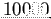

Siguiente: Extracción y descripción de Subir: Detección de la región Anterior: Rectángulo delimitador mÃnimo Índice General
Para dar respuesta a estos interrogantes, se ha propuesto un proceso en el algoritmo que censa el tamaño del BR mediante un bloque condicional presentado en el diagrama de la Fig. 3.2, cuya expresión es:
 , donde
es una función que calcula el área en pÃxeles sobre el argumento y
el valor en pÃxeles que el área debe superar.
, donde
es una función que calcula el área en pÃxeles sobre el argumento y
el valor en pÃxeles que el área debe superar.
Respecto al primer interrogante, si no existe movimiento tampoco existe  y por ende la condición de área no se satisface. Entonces, el flujo del procesamiento se deriva al procedimiento establecido en la Sec. 3.9.
y por ende la condición de área no se satisface. Entonces, el flujo del procesamiento se deriva al procedimiento establecido en la Sec. 3.9.
Para la segunda pregunta, se hizo una búsqueda del valor óptimo de
para la configuración general de la escena que se utiliza. El mismo fue establecido de manera empÃrica en pÃxeles que fue el valor con el que se obtuvieron mejores resultados. Ésto limita la detección cuando las esquinas proyectadas de la imagen patrón resultantes de aplicar la homografÃa, forman un área relativamente pequeña (se puede pensar en un cuadrilátero de
 sobre la ventana de
 ). Obtener la cantidad suficiente de caracterÃsticas en objetos de estos tamaños es una limitante que presenta el dispositivo de adquisición de imágenes utilizado. De esta manera, si el área de BR no supera el umbral establecido, se considera a la región como ``demasiado pequeña'' y el procesamiento al igual que en el caso anterior, se deriva a la acción que se describe en la Sec. 3.9.
). Obtener la cantidad suficiente de caracterÃsticas en objetos de estos tamaños es una limitante que presenta el dispositivo de adquisición de imágenes utilizado. De esta manera, si el área de BR no supera el umbral establecido, se considera a la región como ``demasiado pequeña'' y el procesamiento al igual que en el caso anterior, se deriva a la acción que se describe en la Sec. 3.9.